An AM Radio Transmitter
{kind=link}
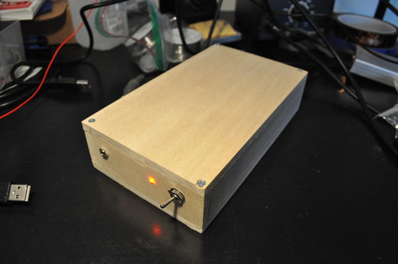
Front of the AM radioI made this AM radio for a communication electronics class. I originally built this on a breadboard, but I decided to make it more permanent. There were other projects in the class where having a transmitter was helpful for debugging. This radio was built incrementally over a couple of months, so the final "design" is a bit of a cobble.
The Radio
{kind=link}
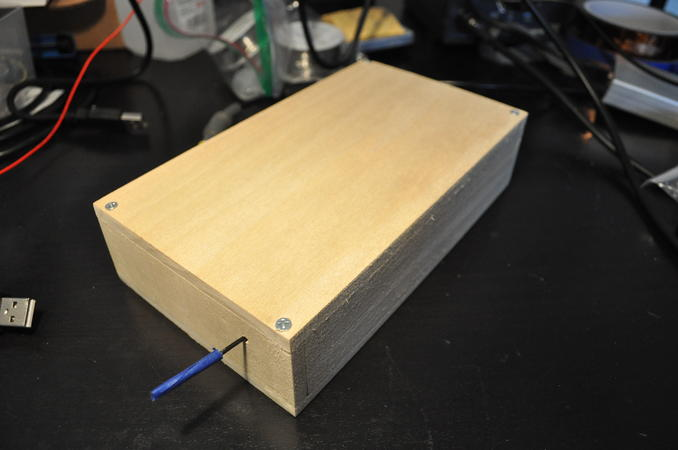
Back of the AM radioThe radio has a retractable random wire 3 meter antenna. I just have to be extra careful when I pull it back out so that it doesn't snag on anything.
{kind=link}
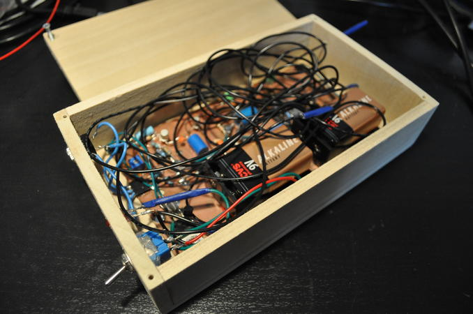
Inside the AM radio with antenna{kind=link}
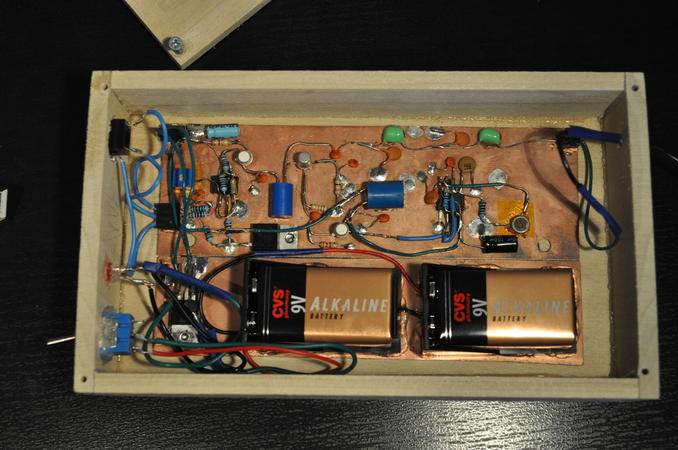
Inside the AM radio without antenna{kind=link}
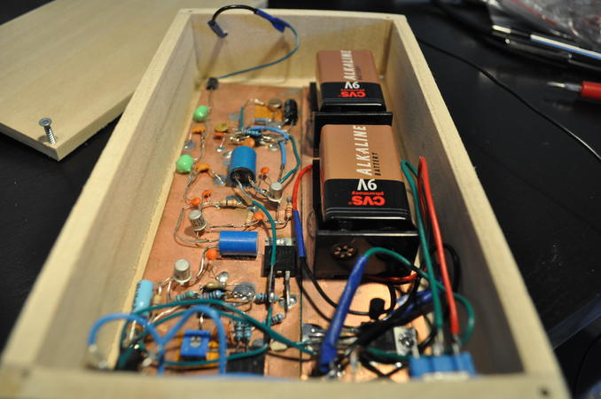
An angled view of the radioHow It Works

This radio works on the principle of controlling how strongly a class C amplifier drives a tank circuit. The radio is designed to transmit in the commercial AM broadcast band from about 500 kHz to 1700 kHz, so its broadcast can be received with any common AM receiver. Regulations from the FCC (Part 15) limit the antenna length and power. The radio's broadcast range is poor, across a small room at most.
{kind=link}
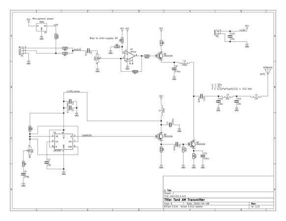
The AM radio schematic (without power supply section)Setting the Carrier Frequency
The carrier frequency is set by the resonant frequency of the tank circuit (L3, C12, C14). The frequency generated by the oscillator must match the resonant frequency for the strongest transmission. It may be difficult to match the frequency with an oscillator if the Q value of the tank is high. I chose to use a tunable 555 circuit as an oscillator. A CMOS version of the 555 was used to reliably reach frequencies around 1 MHz.
Amplitude Modulation
The audio section consists of a 741 op-amp with its output buffered by transistor Q1. The audio output signal from this section sets the DC voltage of the collector of the driving transistor Q3, which implements the class C amplifier.
Transistor Q3 is driven to saturation by the oscillator through Q2. The tank circuit smooths out this sharp driving action. Since the tank holds energy and continues the oscillation back at the collector of Q3, the change in voltage at Q3's collector is the difference between the target amplitude set by the audio and the amplitude of the tank circuit's oscillation. The tank circuit's amplitude diminishes over time, so Q3's operation can be thought of as topping off the tank at each cycle until the amplitude of oscillation is equal to the audio's amplitude.
There are caveats of using a tank circuit in this way. Transistor Q3 may not drive the tank strongly enough to follow a large amplitude increase in the audio signal. A second caveat is that the tank circuit must allow its oscillation decay quickly to follow a large amplitude decrease in the audio signal. This limitation is apparent in an image, later in this post, of a Lissajous pattern where the audio signal is a square wave.
Notable Features
The 7805 regulator provides a DC bias to an audio input to power electret microphones, which make things more fun.
The audio section mixes (additive mix) a stereo audio input to a mono signal.
Inductor L4 provides a rough match to the antenna's capacitance at the resonant frequency. A 1 mH inductor seems to do the trick for a 3 m random wire antenna.
The 555's frequency is highly susceptible to supply voltage. Also, its frequency drifts with temperature as its timing resistors heat up. It's a "feature."
Comparing Theory to Real Life
Let's measure!
{kind=link}
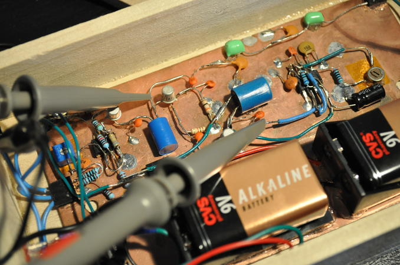
Probes in radioTime Domain Analysis
My carrier frequency is 720 kHz, probably (It depends on the weather).
{kind=link}
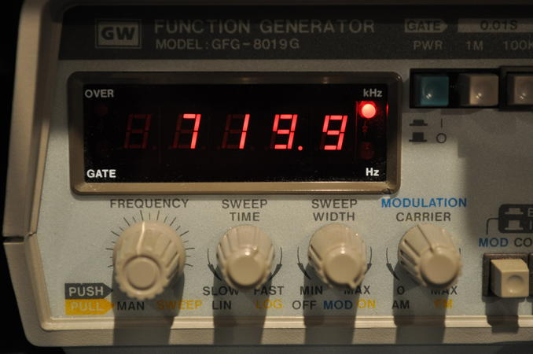
Carrier frequency as measured by a frequency counterThe following image from a textbook shows the voltage that would be observed at the collector of Q3. The textbook measures the voltage against a different reference so the plot is upside down compared to what would be seen in my circuit.
{kind=link}
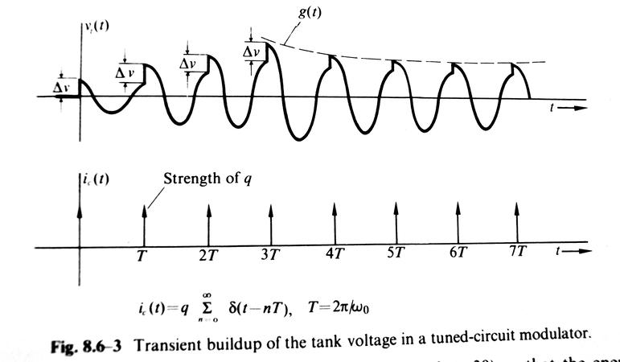
A theoretical plot from a textbook [2]The following image shows the actual voltage at Q3 compared to the oscillator's output. It's not as ideal as what the textbook describes, but it's close enough.
{kind=link}
The next image shows the output to the antenna, right after the tank circuit. The tank circuit acts as a filter and removes the sharp edges from the driving of the tank. The result is a clean sine wave.
{kind=link}
Finally, we have a picture showing amplitude modulation in action. The audio input signal is a 1 kHz sine wave.
{kind=link}
Lissajous Analysis
Lissajous patterns are cool.
{kind=link}
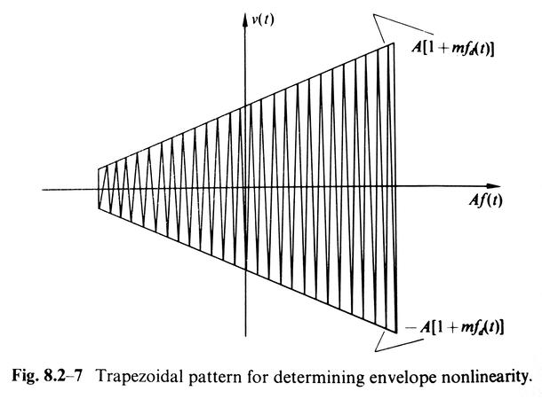
Lissajous from a textbook [3]The X signal is the audio signal, while the Y signal is the modulated output. The trapezoidal Lissajous pattern can be used to measure linearity and modulation index of the signal. The figure of merit in linearity is how straight the sides of the trapezoid are.
{kind=link}
The asymmetry in the trapezoid of the following image reveals leftover distortion from the driving of the tank circuit. The linearity between the audio input and the resulting envelop is ok.
{kind=link}
As the modulation index increases, the trapezoid will become taller. At an index of 100% the trapezoid becomes a triangle.
The following image shows what happens when I overload the audio amplifier with a very large signal, making the op-amp very unhappy. The radio is not capable of reaching 100% modulation.
{kind=link}
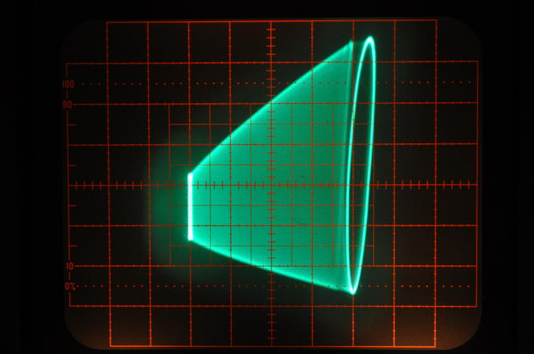
Audio Input: Extremely large amplitude 1 kHz triangle wave
X: Audio 2 V/div, Y: Modulated 2 V/div
Next, I replace the audio signal with a square wave of reasonable amplitude. The Lissajous pattern reveals two trapezoids, which probably correspond to the rising and falling edges of the square wave.
{kind=link}
{kind=link}